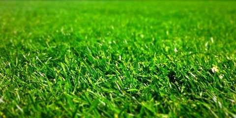

Image Maps

wikipedia says,
Grass is a monocotyledon plant, herbaceous plants with
narrow leaves growing from the base. A common kind of
grass is used to cover the ground in a lawn and other places.
The grasses include the "true grasses", of the family Poaceae
(also called Gramineae), as well as the sedges (Cyperaceae)
and the rushes (Juncaceae).[1] These three families are not
closely related but belong to different clades in the order Poales.